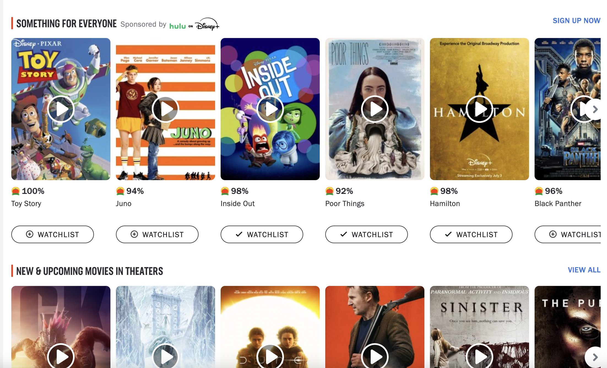
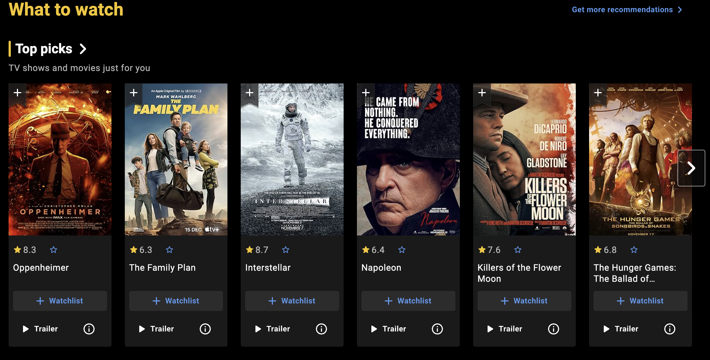
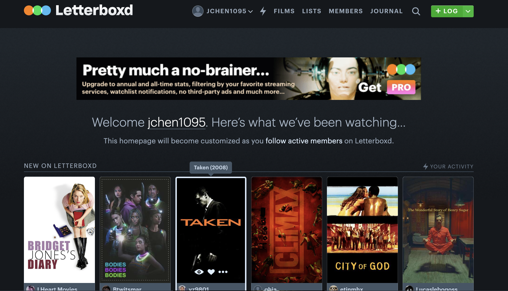

This project called "Development" for my UIUX class focuses on researching and evaluating a specific aggregator functionality across similar websites and then implementing a website with an effective aggregator function. In this project, I analyze the "watchlist" feature for movie and TV-show rating websites. Building on the most successful designs from this research, I describe and implement these features in an aggregator in a plant shop website.
| Factor | Metacritic | Rotten Tomatoes | Letterboxd |
|---|---|---|---|
| Trailer quick-view | Yes | Yes | No |
| Add To Watchlist Button on Movie Card | Yes | Yes | Yes |
| "Like" option | No | No | Yes |
| Watchlist Page in Navigation Bar | No | Yes | Yes |
| Creating multiple watchlists | No | Yes | Yes |
Below is an image showcasing the movie item cards with the watchlist button:
We are comparing this to IMDb's setup:
and Letterboxd:
I compared Rotten Tomatoes, IMDb, and Letterboxd for its "Watchlist" functionality relative to each other. This was an interesting undertaking as all three websites had different features and implementations for using watchlists.
From my observations, it seems that the primary purpose of watchlists is to store media that are interesting to users so that they can better remember and keep track of movies or TV shows that they want to watch. This feature is closely linked with other functionalities on the websites, such as the media display cards, as many websites incorporate the "add to watchlist" button to the media cards.
Rotten Tomatoes's and IMDb's "add to watchlist" button was very useful as it was a distinct button under every media card that looks clickable (the buttons are outlined). This made the 'add to watchlist' function more intuitive and guides the user to add new media to the watchlist. However, navigating to the watchlist on the Rotten Tomatoes website was more difficult than others as you have to first navigate to your profile ansd then find your watchlist, whereas other websites have the watchlist explicitly linked as one of the pages in the navigation bar. IMDb's watchlist link in the navigation bar even includes a number count of how many movies/TV shows you have 'saved,' which would be useful to users who want to be mindful of how large their watchlist becomes. On the Letterboxd website, one has to hover over the media card for the "add to watchlist" button/ short-cut to appear, and even then this functionality is a bit confusing as you are only shown some icons (an eye, a heart, and an option for more choices). The eye button is to add to watchlist and the heart is to 'like' the item. These icons can be ambiguous and confuse users, making it less successful than the other websites' "add to watchlist" buttons. For example, by convention tapping "heart" buttons on social media allows users to mark items that they enjoy or may want to come back to later. There is not really a conventional icon to represent "watch later," for example the "watch later" icon for Youtube is a clock, so it may be misleading have an eye and a heart button side by side as some users may interpret the heart as 'saving' the item (which they can interpret as 'saving to watchlist') but not the eye as 'adding to watchlist.'
Moreover, both Rotten Tomatoes and IMDb offer "watch trailer" shortcut buttons on the media cards which are useful in deciding whether or not to add the media to your watchlist without having to go through the hassle of looking up the trailer.
In summary, having explicit, 'clickable' buttons to 'add item to list' for the favoriting function is successful in guiding the user use the watchlist and have a smooth experience. It is also considerate that users don't have to hover over item cards to find the 'add to list' button as this may cause further confusion. Moreover, explicitly showing the 'favorite list' on the navigation bar is also important to help users to access and edit their favorites list quickly and without hindrance. Moreover, it is important to use conventional icons and to simplify the use of icons for buttons, as having too many non-conventional icons could confuse the user in understanding the difference between icons since there is little to no text to lead the user.
This app is a plant shop that lists different plant seeds that can be purchased. Users can also 'add' these seeds/plants to cart. Plants are sorted based on their price. Users may also filter the plant list by the kind of The aggregation of items is manifest in the shopping cart.
As I was coding the project, I found that some exciting aggregation functionalities were not necessary or beneficial for the specific plant shop task at hand. For example, users do not need to crete multiple wishlists or shopping carts if the website is a strictly shopping-focused platform. However, if a more blog/community-like aspect was implemented, then it would be useful to offer users the option of having different plant wishlists especially provided that options increase (for example, there is greater need for multiple wishlists when users can purchase houseplants, garden plants, flower seeds, mushroom spores, etc. as these are all different categories of items that are grown in different areas of a home).